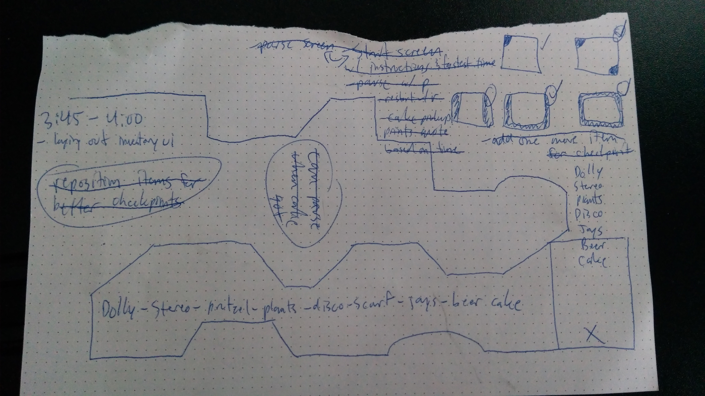
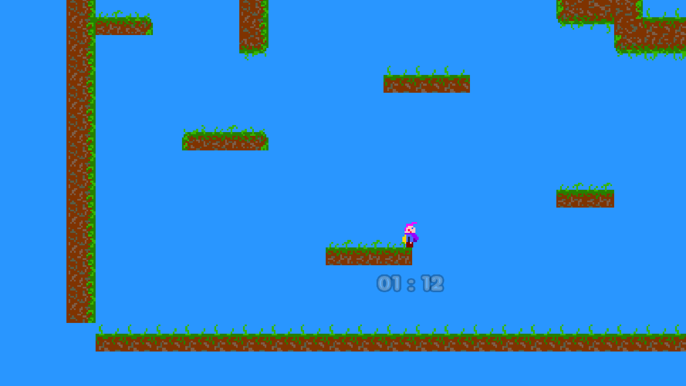
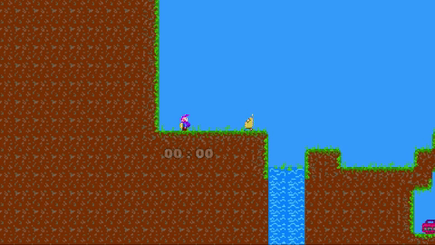
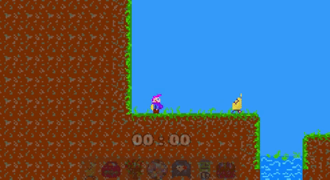
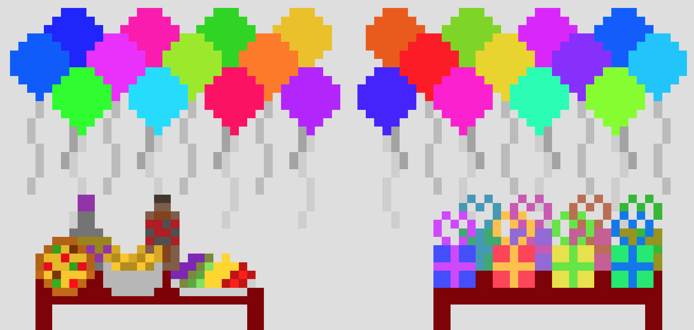
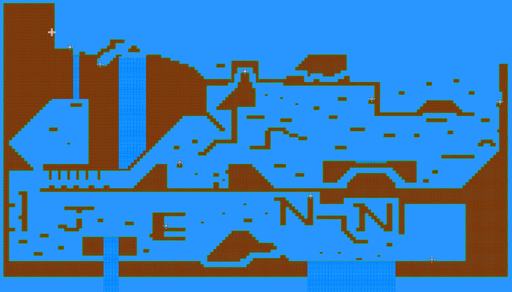

Making a game is tough. We’ve read it in countless books and articles, heard it on podcasts, and seen it in the first hand video accounts of developers.
Making a game in a limited amount of time is tougher. Looming deadlines are always in the back of your head and crunch time seems to be an industry standard practice that doesn’t appear to be going away.
Making a game in the limited time span of one or two days should be the toughest then. Yet this is the stuff game jams are made of and people voluntarily participate in them. Lots of people.
2020: (31 Jan - 2 Feb): 934 sites, 118 countries, 48,753 registered participants, 9601 games – Global Game Jam
Game jams are fun though. You’re working hard on a tight deadline but you’re doing it because you want to. You enjoy the process of game development, sharing what you’ve made with other like-minded people, and seeing what they were able to create in the same limited amount of time.
The strict deadline, and other rules around a required theme or which assets you can use, force you to think creatively and weigh out whether certain time-intensive features are truly worthwhile. In return, I think you get a sense of accomplishment that’s not attainable under normal circumstances.
If you’ve read my previous posts about the game I’m developing called Diner Drop or when I helped a friend create a game called Space Hack, you’re well aware of my relationship with Godot. It’s a pretty good one; we understand each other, get along well, and I feel I’ve learned a lot about it. I’m comfortable with the engine.
So when I came up with an idea to create a game as a birthday gift for a friend of mine, naturally I was pretty confident that I could do it with Godot. I think the end product came out looking, sounding, and playing pretty good.
Especially considering that it was made under the same conditions as a game jam: only one developer, a development time limited to just a day or two, and the ability to use certain assets that you’ve already created. It was completed it in just 22 hours of total development time (asset creation, programming, general problem solving, and everything else).
This post is fairly long and involved so feel free to skip ahead to a certain section if you like:
- The Game
- The Idea
- The Deadline
- The Execution
- The Lessons
- The Unintentionally Good Game
- Final Thoughts
The Game
Jenn’s Adventure (playable here) is a 2D platformer that features all original assets: graphics, music track, and sound effects (created from audio recordings of the titular Jenn). It has multiple paths, a secret or two, and a character with tight controls that can double jump and dash. I think it’s a pretty solid platforming game overall.
The Idea
Given the pandemic and everyone’s understandable desire to social distance, I was unsure how to make this milestone birthday special for her. Sending a card or gift through the mail is great but it doesn’t have the same oomph as taking someone out for a luxurious dinner at place they really like but never get a chance to go to on their own.
After thinking about it for a couple of days, I came up with the perfect idea and like most great ideas, it came to me in the shower: I could make a game centered around her as the main character that ultimately shows a birthday message when completed.
I flushed out the idea while putting in my contact lenses and brushing my teeth:
- it’ll be a platformer (they’re approachable with small learning curves) where you play as Jenn herself (complete with voice lines and phrases)
- you’ll need to meet up with her friends who have a surprise waiting for her
- along the way you’ll be able to pick up items that are meaningful to Jenn (again, complete with a voice line)
- the items will act as checkpoints since falling from too high will cause you to respawn (just like real life…)
- a double jump ability will make it easier to play and a dash ability will add some variety
By the time I finished in the bathroom and got dressed, the idea was concrete enough to start developing.
The Deadline
As much fun as I had developing against such a tight deadline, I would not normally impose such a thing on myself as I’m not a masochist, but for someone as great as Jenn, the challenge was welcome.
The deadline was obvious as since this was to be a birthday gift, it’d have to be completed by her birthday; four days from my bathroom epiphany. But just because I had four days, didn’t mean that I had four days. Other important obligations like work and life would need to be tended to as well.
Thankfully it was a Saturday when I finished my watery rumination which meant that I had the rest of the weekend to get as much done as I could.
The Execution
I started by writing down what I flushed out earlier in the day and further developed that with a list of features to implement and assets that would need to be created. I wanted the game to at least include (the requirements):
- a level that can be easily created and modified
- an easy to control character with a double jump
- some kind of hazard that would cause the player to respawn
- items that the player could pick up and have act as checkpoints for respawning
- a round timer that counts up to show how long the player has taken to complete the level
- a looping music track in the background
- sound effects and voice lines from Jenn
- an ending scene with a birthday party
If I had time I would work on including some other features too (the nice-to-haves):
- a dash ability (with a cooldown so the player has to wait before they can use it again)
- an inventory UI element to show what items were in the level and which of them the player acquired
- a quote that appeared on the UI whenever an item was picked up (specific to each item) or the player respawned (a random quote from a selection)
- an animation for the ending scene with a few looping frame of people cheering and dancing
With the plan set, I began working on Jenn’s Adventure.
Warning
The next section is exhaustive; it itemizes every minute of development time. If this sounds like too much for you, skip ahead to the development stats or lessons sections.
Day One: Saturday
Project Creation and Tilemaps (1 hour)
Development started with the project creation in Godot and included setting up the input button mappings and the window size with its associated configurations.
With a platformer I knew that I needed an easy way to lay out and adjust the platforms in the level so naturally, I used a tilemap. After creating my tiles with paint.NET, I researched a little on how to create one in Godot and about an hour later I had a way to layout my level and made a simple area to test on.
The Player: Movement and Camera (1 hour, 50 minutes)
Next came the player, arguably the most important piece in the game. I went back to my image editor and created a player character sprite modelled after Jenn with pink hair and a purple scarf (the resemblance was uncanny).
I brought the sprite into Godot and setup a player controlled character with Godot’s KinematicBody2D object (it takes care of interacting with the game engine for physics and handles collisions with the level elements like the ground tiles).
I now had to put together my player movement script to listen for button presses and move the player in-game while applying a gravity force. I had a rudimentary script working but it felt slow and unresponsive so I started looking online for some tips. I found this thread from the Godot subreddit and modified my script to include some code from it.
Now I just needed to to get the camera to follow the player in the level which turned out to be very easy in Godot. It involved adding a Camera2D object as a child of your player object and setting one property.
With the player movement and camera setup, I fiddled around with the level layout some more to create a better area to test them in.
Roadblock the First (1 hour)
Programming of any kind is bound to have issues that arise. The first major one came when I wanted to make the water tiles cause the player to respawn. My thought was to check what kind of tile the player collided with and respawn them if the tile was a water tile. I browsed the internet for an hour, only to find that I wasn’t able to do it that way. I gave up on that solution and starting thinking of another way.
Roadblock the First: The Way Around (45 minutes)
Instead of causing a respawn based on when the player touches the water tile, I decided to do it based on when they fell too fast.
Textual Feedback and the First Item (30 minutes)
The nice-to-have feature that shows a quote when the player respawns was implemented along with the first item sprite and its associated object within the game.
Day One Recap
Total Cumulative Development Time: 5 hours and 5 minutes
Features completed on day one:
Required
- a level that can be easily created and modified
- an easy to control character with a double jump
- some kind of hazard that would cause the player to respawn
Nice-to-haves
- a quote that appeared on the UI whenever an item was picked up (specific to each item) or the player respawned (a random quote from a selection)
Day Two: Sunday
More Items (55 minutes)
Day two started out with the creation of more graphics for the items. Fun and fairly simple but time consuming.
The First Completely Playable Build (2 hours, 15 minutes)
Before digging into the code again, I took some time to layout the entire level on paper (disregard all the other notes in the image below), outlining the path that I wanted the player to take in a normal run and then mapped it out with the tilemap editor. 
Once I had a full level created, I moved onto the checkpoint functionality which involved keeping track of a respawn point and updating that to be the point where an item was picked up.
The dash mechanic came next despite it being a nice-to-have because it was easy enough to implement.
The final component added was the cake; it would be the last item acquired by the player and would trigger the ending scene.
That was it. The first completely playable build (including the win condition trigger) was completed in 8 hours and 15 minutes.
Music and Sounds (1 hour, 30 minutes)
Every single sound you hear except for the music track is Jenn’s voice. This includes the jump (a pitched up version of her “uhh”) and dash (a modified version of mouth smacking) sounds. It was a fairly involved block of time as I now faced the challenge of combing through recordings and finding appropriate lines (in addition to ones that I could modify to provide more…noise type sounds).
More Art (45 minutes)
More art asset creation.
UI and the Run Time Clock (35 minutes)
The quote and time clock both had to be visible at all times but because I was using a camera that follows the player, I discovered early on that the quotes I was showing after respawn or when an item was acquired were being left behind in the world when the player moved.
I attached both to the player object instead of the world and I now had a UI that followed the player. Perfect. This was also when I added Jenn’s face beside the quote. Double perfect.
Fonts and Clock Formatting (20 minutes)
I found a nice free font on dafont and updated all of the textual elements. Lastly I updated the run time clock to show minutes and seconds and made sure it incremented correctly.
Day Two Recap
Total Cumulative Development Time: 11 hours and 25 minutes
Features completed on day two:
Required
- items that the player could pick up and have act as checkpoints for respawning
- a round timer to show how long the player has taken to complete the level
- a looping background music track
- sound effects and voice lines from Jenn
Nice-to-haves
- a dash ability (with a cooldown so the player has to wait before they use it again)
Day Three: Monday
No more weekend meant no more spending the whole day developing but rather doing it late into the night.
Filling in the World (1 hour, 15 minutes)
When I initially set up the level, I had the bare minimum amount of tiles placed. This meant some platforms had no corners and others had no finished matching bottom. This time was spent placing the tiles that filled out the level and made it look complete. 
Pause Screen (15 minutes)
If there’s a running clock in a game, there better be a pause function. The pause screen stops the run timer, the input from being processed, and the player from moving. Simple but important.
Restart (30 minutes)
One feature that I enjoy in platformers aimed at gamers who speedrun games is a function to quickly restart. I don’t want to wait around for a death animation to play, I just want to try again. And again. And again.
The restart functionality had to do a few key things: the player position must reset to the original spawn location, the run timer must reset to 0, and the item positions and states must reset to their original values. I had the first two working well but the last one was causing a problem.
Roadblock the Second (45 minutes)
If the player hits the restart button while on the item’s spawn location, they’ll pick it up even though the they’ll spawn at the original location. I tried moving the player spawn point way off screen, disabling collision detection on the item, and whatever else I could think of but in the end, the bug persisted for the time being. 
Ending Quote (10 minutes)
Picking up the cake and triggering the end scene shows a quote based on how long it took the player to complete the level.
Instructions and the Start Screen Overlay (45 minutes)
If people don’t know how to play or why they’re playing, then what’s the point? Made sure that the instructions could be seen entirely when the game initially started. Since they’re attached to the player object they sometimes get cut off depending on when the pause button is pressed.
No Pause After Winning (5 minutes)
Pause can’t be pressed after the level has been completed. No pause, only zuul restart.
Roadblock the Second: The Way Around (1 hour, 25 minutes)
The one thing I forgot to try was to disable the collision of the player when resetting. Of course, this did the trick and worked exactly as I wanted. Now on a restart, the player’s collision box is disabled, the items are reset, the code execution waits for 100ms, and it then re-enables the collision box of the player.
Inventory UI (25 minutes)
Added the inventory UI area and the item sprites so they start out transparent (to let the player know what can be found) and become fully saturated when acquired.
Miscellaneous Tasks (1 hour)
By this point it was pretty late in the evening so I didn’t have much brain power left for bigger tasks. I added a toggle button for showing and hiding the inventory, updated the instructions, created and added a few additional world tiles, and made a small but important change: making the player character face the direction they’re moving in. 
Day Three Recap
Total Cumulative Development Time: 18 hours
Features completed on day three:
Nice-to-haves
- an inventory UI element to show what items were in the level and which of them the player acquired
Day three of development included a lot of features that helped make the game more complete but weren’t strictly gameplay focused:
- filling in the level with tiles to make it look better
- the pause and restart functionalities
- instructions on how to play
Day Four: Tuesday
Going into the final day, I still hadn’t created the most important asset: the birthday party scene. Naturally I left that until the final few hours.
Music and More Instructions (50 minutes)
I initially used a placeholder track for the background music and realized it didn’t have the jaunty upbeat feel I was going for. My girlfriend (also the official playtester) suggested that I use a melodica recording of the Entertainer I’d made for a YouTube video as the background music and I agreed that it would fit perfectly.
After swapping in the file and setting it to loop, I added a toggle button for the sounds and configured the music track to stop when it was pressed, then start again from the pause point when pressed again.
This time was also spent rewording, laying out, and highlighting the instructions to make them more legible and eye catching.
More Item Assets and Laying Out Checkpoints (1 hour, 10 minutes)
While playing through the level, I realized that the item checkpoints were too far apart and this caused an issue in the flow of the game when a player respawned too far back from where they fell. I decided to add a couple more items and repositioned them all to not punish the player as severely for making a bad jump.
The Final Scene (1 hour)
Having finished all of the game design and technical tasks, I got down to creating the assets for the birthday party scene which was quite soothing. Knowing that I was almost done really allowed me to enjoy this last creative task. 
Playtesting and Final Adjustments (1 hour)
I playtested the game as I went but in doing so, I was overtly aware of where all the platforms and items were located. I needed someone who hadn’t seen or played the game yet to offer unbiased feedback so I enlisted my girlfriend’s help. She offered some valuable comments on the instructions wording, platform placement, and even a simple thing like adding a message to let the player know after they beat the level that they can restart the game by pressing the R key. It was extremely helpful.
I also learned while watching her that some of the parts that seemed easy to me may be more difficult for others, especially those who don’t play games all that much so I added an easy mode that activates if the player falls 10 times. It adds 3 additional jumps for a total of 5 before the player needs to touch the ground again.

Day Four Recap
Total Cumulative Development Time: 22 hours
Features completed on day four:
Required
- an ending scene with a birthday party
Completion
With development officially done there was one nice-to-have feature that I didn’t end up getting in: a looping animation for the ending scene with people cheering and dancing. It was partially because I didn’t have any time left (development wrapped up at around 9pm the day before Jenn’s birthday) and partially because it would be a very involved process that I didn’t feel would add all that much more to the game.
So I made the final commits to the source repository, built a web version of the game, uploaded it to the website, and drafted the message I’d send to Jenn the next morning.
Development Stats
| Stat | Time |
|---|---|
| Total Development Time | 22 hours |
| Total Days Developed Over | 4 days |
| Development Time: Day 1 | 5 hours, 5 minutes |
| Development Time: Day 2 | 6 hours, 20 minutes |
| Development Time: Day 3 | 6 hours, 35 minutes |
| Development Time: Day 4 | 4 hours |
| First Completely Playable Build | 8 hours, 15 minutes |
| Total Time Spent Creating Assets (graphics and sound) | ~5 hours |
| Total Time Spent Debugging | ~4 hours |
The Lessons
Don’t let perfect become the enemy of good
The agile and devops paradigms both preach developing in iterations so you can fail fast, learn from your mistakes, and quickly have something to show for your efforts. Practitioners are after something good enough rather than perfect.
In my plan I had both required and nice-to-have features because I knew that if it came down to it, I could focus my time on the required ones and forget about the nice-to-haves (this didn’t exactly end up happening as I quickly implemented some of the nice-to-have ones in the heat of development; oh well, the dash just became a required feature).
Know when to move on
A couple of times (see the roadblocks above) I got stuck on a problems that I just couldn’t solve in a timely manner but in both cases I eventually found alternative solutions after revisiting the problem later.
In the second roadblock though, I didn’t come up with an alternative solution right away so I decided to let the bug live on for the time being, eventually coming back about an hour later to squash in. Since it wasn’t a game-breaking bug, I knew that I could leave it and move on with other tasks that needed to get done.
The sunk cost fallacy affects a lot of people and knowing when to cut your losses (in my case, time) and move on is important (doubly so in my case given the very limited amount of time).
Don’t underestimate your own bias
Playtesting is an important and valuable part of the game development process: it helps uncover bugs but it also shows what people who’ve never seen or interacted with the game think and do while playing it.
As the designer and developer, I know where every item and platform are in the game. I know which jumps are easy, tricky, and impossible. I know the different paths and secrets in the game. I’m all knowing and that affects how I play it.
By the same token, no one else will know as much about the game as I do and that will affect how they play it. Watching and listening to other players interact with your game can give you new insights and help you improve it in ways you may not have thought to.
Godot-specific Learning Points
I mentioned in the beginning of the post that I felt pretty comfortable with Godot and while that’s true, it doesn’t mean that I didn’t learn anything new in this process. This is not an exhaustive list but just the components that I’d never used before.
- Tilemaps: I knew about them but not how to create and use them (very easy to do with Godot)
- Audio: unbelievably easy to do in Godot (create an
AudioStreamPlayerobject, give it a supported sound file, and write$"/MyAudioObject".play()) - Camera2D: equally easy to setup a camera that follows the player (add it as a child of your player object, that’s it)
The Unintentionally Good Game
This game had to first and foremost be a gift to celebrate someone. By making Jenn the main character, adding items she’d connect with, and making the entire game about celebrating her birthday, I think that it achieved that goal.
Ancillary to this was to make a good platforming game. One that felt good to control, had good replayability, and was just fun overall. These are the features that I think allowed it to do both.
- Level design has multiple paths with both easy and tricky jumps (replayability)
- Quick learning curve (approachable for beginners)
- Collecting items is optional (difficulty level vs speed; get a better time by not collecting items but risk starting from the beginning if you fall)
- Different “endings” (the final quote changes based on time spent and number of items collected)
- Speedrun friendly (multiple paths, dash ability, quick restart)
- The game rewards exploration and experimentation (see secrets section below)
Secrets
The Waterfall
Respawns occur when you fall too fast and not when you hit a specific tile. This means you can use your jumps to not only go up but stop yourself from going down too fast.
Additionally water tiles have no collision box; you can pass through them.
If you couple these two intentional design choices, you can use them to skip the first third of the level.

The Name
If you pay attention to the platforms in the bottom third of the level, you might notice that they spell something out. A little easter egg for the keen eyed.

Final Thoughts
Game design and development have interested me for a long time but I always thought they were too difficult to get into and that I wasn’t smart enough. With free tools like Godot and the ability to learn at your own pace from free videos on YouTube and forum posts, I learned that I had everything I needed to become a game developer.
This project really helped me solidify in my mind that I can be a game developer.
Scratch that. I am a game developer.